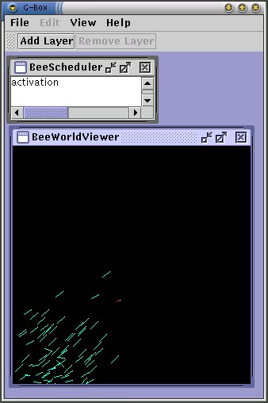
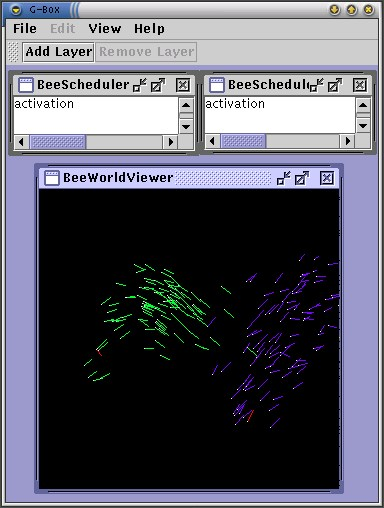
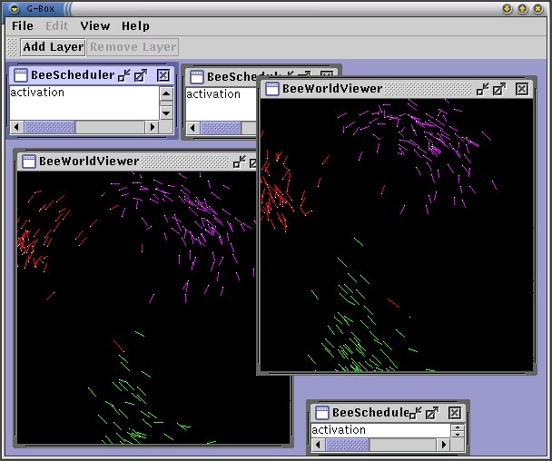

| The "Demo" Agent Pack | ||
|---|---|---|
| Prev | ||
The main recent improvement in MadKit is the addition of a generic synchronous execution engine to the kernel. You can now build reactive systems, simulation models or hybrid agent architecture with the same agent/group/role model or messaging capacities. This new architecture allows for easy definition of scheduling mechanism and probes to observe a system.
These agents illustrate the use of the synchronous engine. The BeeScheduler launches many synchronous agents and schedules them, and the BeeWorldViewer sets up some probes to watch the simulated system.
Launch the "BeeWorldViewer", and then a "BeeScheduler". Set the "active" property of the BeeScheduler to "true" (what we have here is a scheduler that launched 100 MadKit "bee" agents and an independent observer).

Now launch another "BeeScheduler" and activate it. Then select the BeeWorldViewer frame and set the "instantupdate" property to true. What we have here is a common observer for two independent reactive systems.

Now kill one BeeScheduler. The agents are not executed anymore, but still exist, and the observer should show one still swarm and another still roaming. You could also add another viewer, etc...

To fully understand this code, you should read the chapter the synchronous engine in the MadKit Development Guide. The "bees" example is then quite straightforward. Notable implementations points here are the use of two different activators: the standard ReflectiveActivator which just plugs itself on an existing class through the reflection Java API, and a hand-made BeeActivator which shows that it is always possible to develop some specific classes to maximize speed or expressiveness.